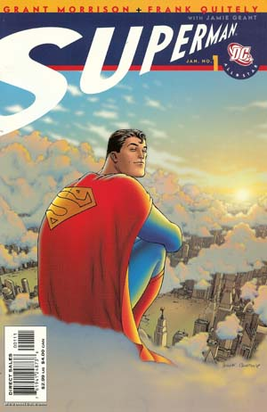

For those just getting into comics the subject may seem a bit overwhelming...
...and it is. Comics is a huge medium which has been around for longer than you might think and although it can come across as trashy or even trivial there's no denying it's popularity.
I've included mainstream comics in this list like Grant Morrison's hugely popular All-Star Superman and Goscinny and Oderzo's hilarious Asterix stories but there's also titles you might not have heard of outside of the comic world like Joe Matt's self deprecating biopic The Poor Bastard or Alan Moore's long-lost superhero masterpiece Miracleman.
More and more people I know are getting interested in comics even though I live in a country where comics are considered to be quite childish. I happen to come from the UK where common pastimes tend to be taken very seriously indeed including cycling, shed building, gardening and, of course, paralytic drinking.

So where do you start if you are also thinking of getting too serious about comic books? Well the perfect place to start with comics is by reading one that's really ruddy good and although there's lots and lots of different styles and comic-book genres it can be really easy to just stick to what you know and never venture outside a certain type.
I have split my chosen favourites into categories but they are fairly broad and are by no means limited to any particular genre, even though that being said most western comic books do tend towards more fantastical themes. If you are already a fan of sci- fi and adventure you will most probably find it easy to pick something you're going to like but I'll bet if you're not you could be in for a more fulfilling experience once you find something that you can get into.